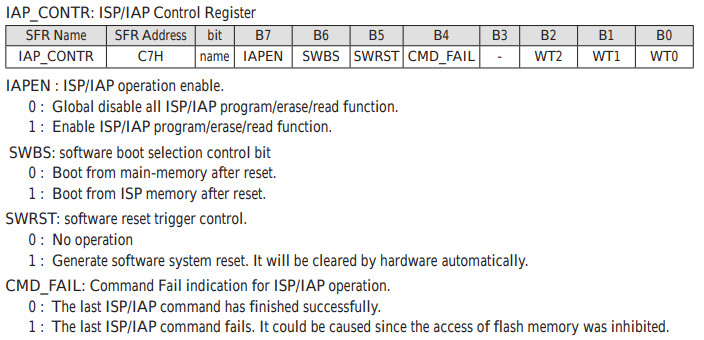
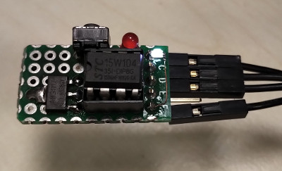
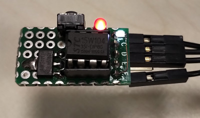

參考資訊：
http://plit.de/asem-51/
http://www.stcisp.com/stcisp620_off.html
https://sourceforge.net/projects/mcu8051ide/
STC15W104提供一個透過軟體Reset的方式，就是直接寫入IAP_CONTR暫存器的SWRST位元即可

led .equ p3.2
.org 0h
jmp _start
.org 100h
_start:
setb led
call delay_1s
clr led
call delay_1s
mov 0c7h, #20h
jmp $
; 1t + ((1t + (4t * 250) + 4t) * 200t) + 4t = 201005t
; 11.0592MHz = 0.09042us
; 201005t * 0.09042us = 18175us
delay_18ms:
mov r7, #200
d0:
mov r6, #250
d1:
djnz r6, d1
djnz r7, d0
ret
; 1t + ((4t + 201005t + 4t) * 55) + 4t = 11055720t
; 11055720t * 0.09042us = 999658us ~= 1s
delay_1s:
mov r5, #55
d2:
call delay_18ms
djnz r5, d2
ret
.end
編譯
$ mcu8051ide --compile main.s
完成

